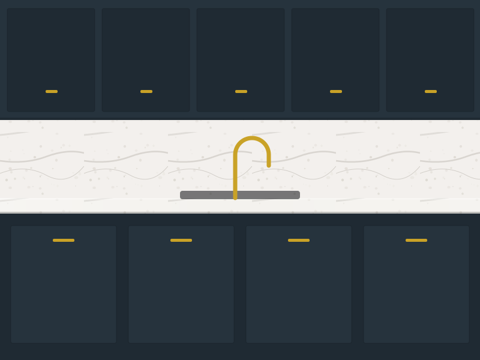

Calacatta quartz · 58 sq ft
Full-height splash in Frisco
Counters and a full-height backsplash cut from the same slab so the veining runs straight up the wall behind the range. Mitered 2" edge, undermount sink, outlet cutouts fabricated in the shop.